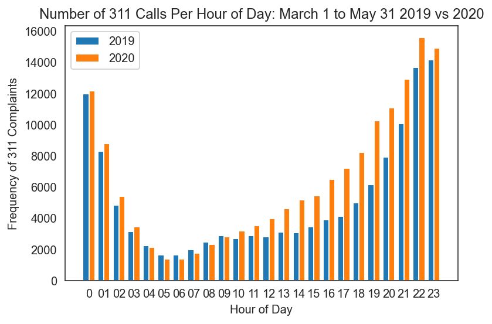
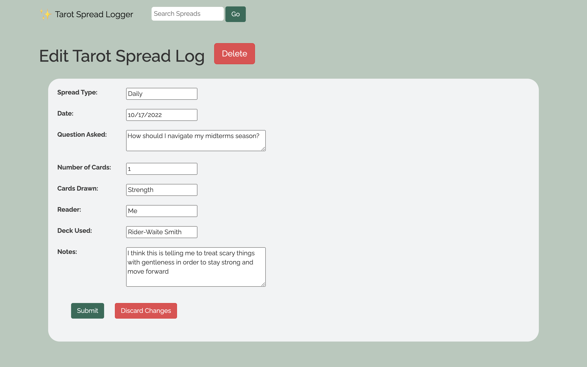
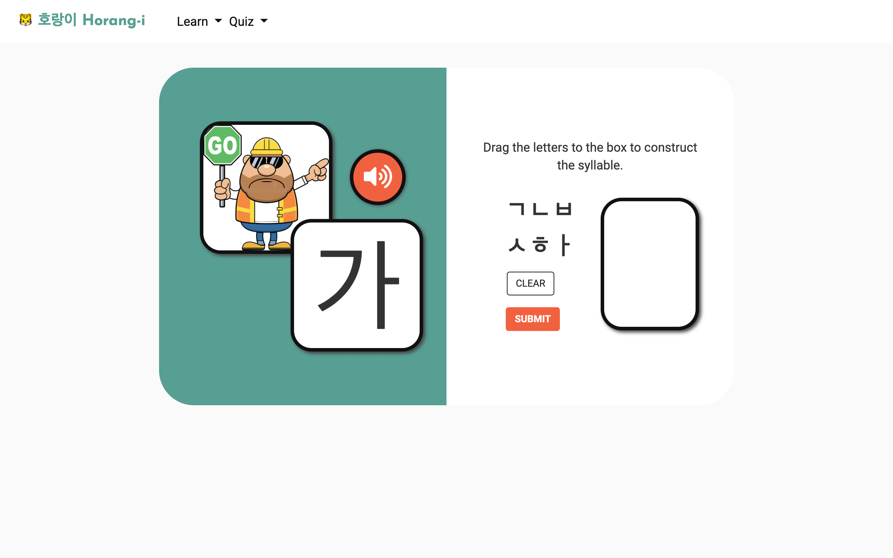

coding

311 Noise Complaints Data Analysis
This past spring, I worked on an independent study research
project to analyze the changes in noise complaint patterns
that occurred at the beginning of the COVID-19 pandemic in New
York City.
I sourced my 311 noise complaints from the 311 Dataset from
NYC.gov, utilized Python (mainly Pandas / MatPlotLib /Scipy
libraries) for all of my data analysis to explore change in
noise types, frequency, and location over time by zip code.
While analyzing these millions of noise complaints, I found
many statistically significant changes in the nature of noise
complaints during the beginning of the COVID-19 pandemic. You
can check out my project website
here.

Tarot Spread Logger
In my free time last fall, I developed a web application for
tarot readers + hobbyists to write down the spreads they
complete.
As someone who enjoys reading tarot cards, I realized that I
always found myself handwriting my notes about spreads and
that I didn't have a centralized place to digitally document
this. As a result, my notes were scattered across various
notebooks, leading me to have to search high and low for these
records.
To solve this problem, I decided to create a web application
that uses a Flask backend and HTML/CSS + JavaScript/jQuery on
the frontend in order to log my tarot readings in a simple,
beautiful way.
I designed this web app as a CRUD application, so users can
add, delete, view, edit, and search tarot spreads. You can
check out my GitHub repo
here.


UI Design Final Group Project
For my final project in COMS 4170 User Interface Design, I
worked in a group to design and build a web application that
helps a user interactively learn characters of Hangul, the
Korean alphabet
In order to develop the interface, we interviewed potential
users and watched them interact with our prototypes. This
feedback helped us decide our chosen format and design.
After prototyping, we developed a website with a Flask backend
and a front-end that combined HTML, JS, jQuery, and Boostrap
for maximum visual appeal. Our site contained three
levels—letters, syllables, and vocabulary words.
Each level featured
- an interactive learning portion with audio and/or drag/drop characters to familiarize with Hangul script
- a quiz portion so users could get feedback on their learning